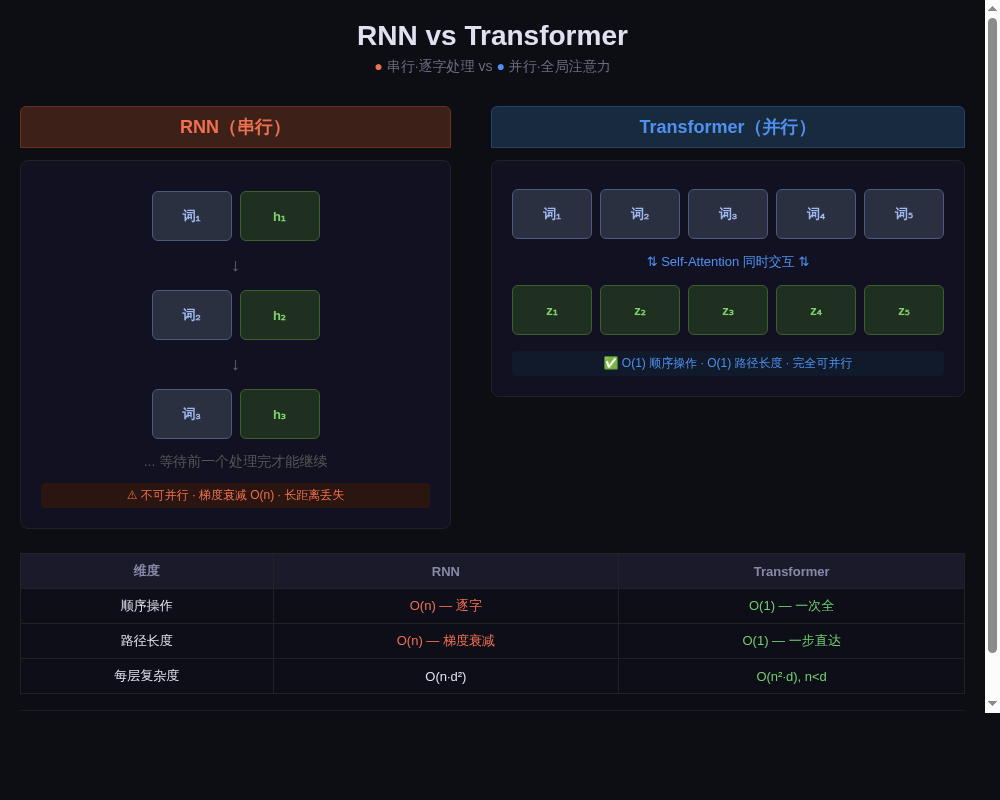
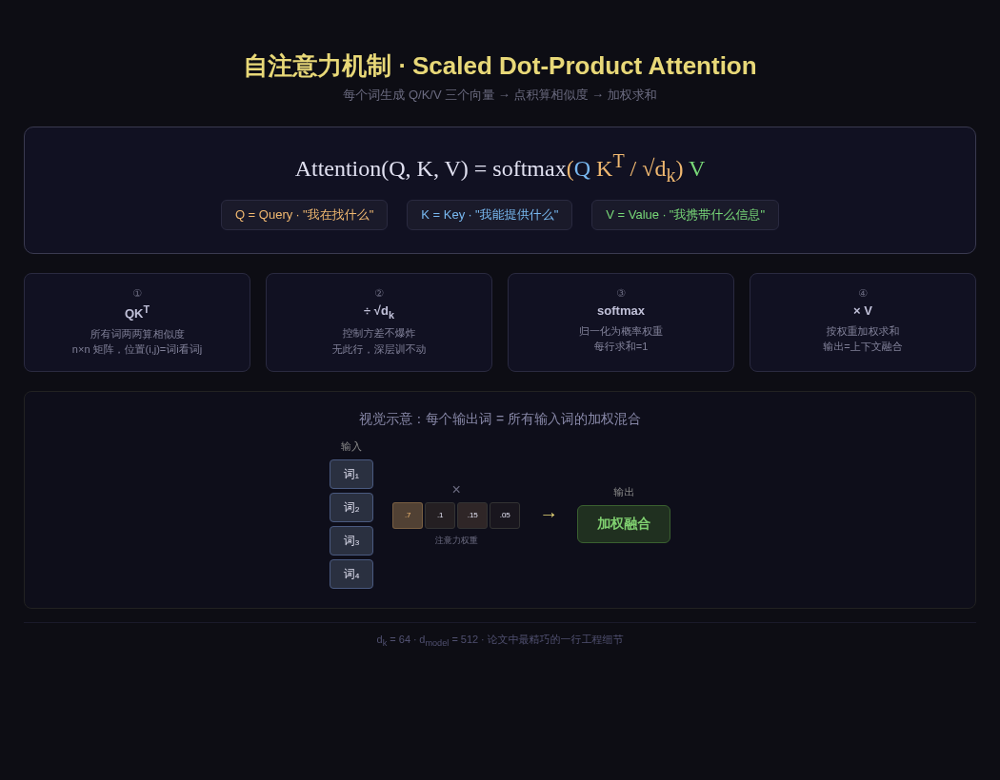
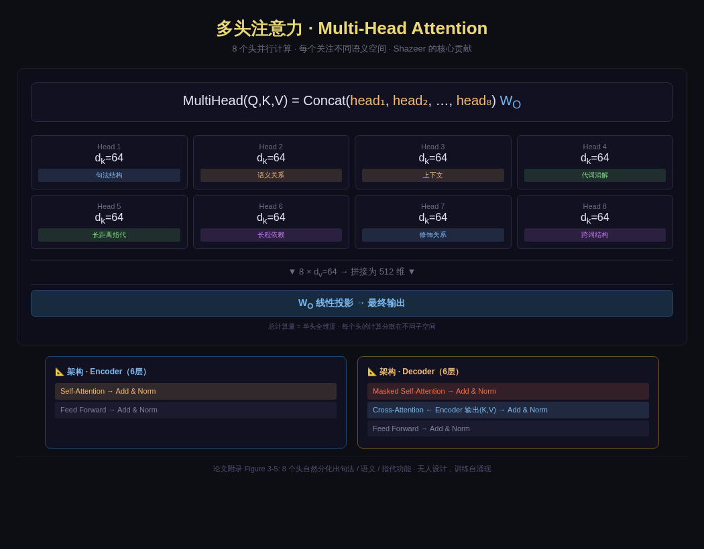
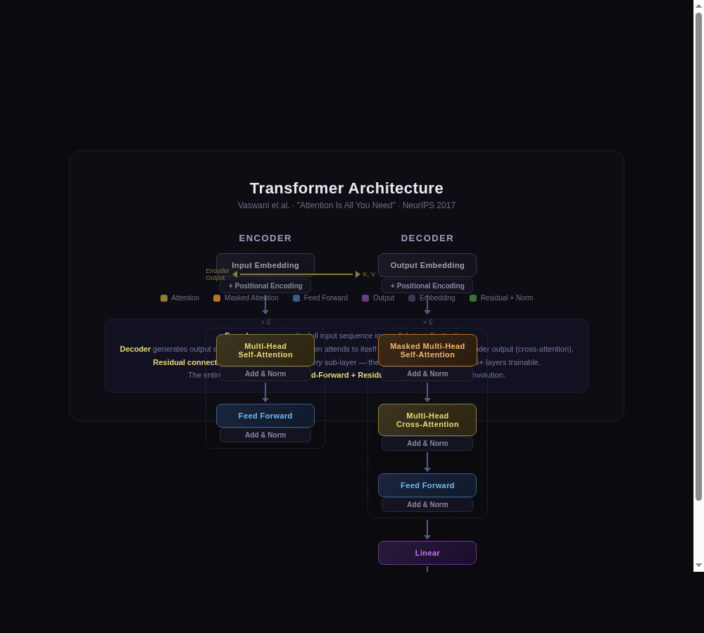
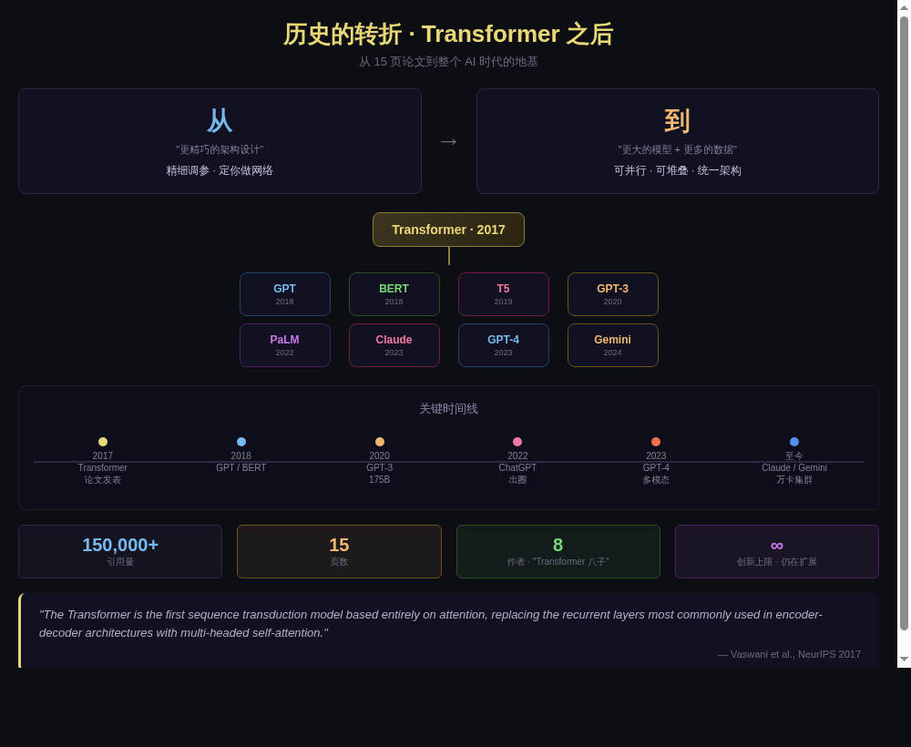

你手机里的 AI、网上的翻译软件、聊天机器人——
它们能"理解"你，全都靠同一项 2017 年的发明。
想象你的教室里，老师想让大家一起翻译一句英文。传统的方法是——老师点名，第一排第一个同学先翻译第一个词，然后传给第二个同学翻译第二个词……每个人都得等前面的人处理完才能开始。
但如果——全班同学同时讨论，每个人都能听到所有人的发言，一起讨论每个词的意思呢？那该多快啊！
Transformer 就是那个"全班同时讨论"的办法。它让 AI 不再"逐字排队"，而是"一眼看清整句话"。
这个想法，来自 2017 年一篇 15 页的论文——《Attention Is All You Need》。
让电脑"理解"一句话，最核心的难题是：词的位置很重要。
"小明打了小红"和"小红打了小明"— 词没变，顺序一变，意思完全相反。电脑必须知道：谁打了谁。
RNN 像一个人逐字阅读：读完"小明"，记住；读"打了"，更新记忆；最后读到"小红"——问题是，如果句子很长，看到后面时已经忘了前面。
Transformer 把整句话同时"摊开"：每个词都同时看其他所有词。距离再远，一步就到。不会遗忘。

RNN 的问题：就像你读一篇超长的小说，读到第 100 页时，已经想不起第 3 页的细节了。
Transformer 的优势：就像你把 100 页同时摊在桌上，任何一页的内容，你都能立刻找到。
Transformer 最核心的发明叫自注意力（Self-Attention）。名字听着复杂，但它背后的逻辑很简单。
假设教室里有 5 个同学，每个同学代表一个词。现在他们要"讨论"这句话的意思。
每个同学做三件事：
整个过程分为四个步骤：

如果只有一个"注意力"机制，那就像全班只有一个同学在讨论——能获得的信息很有限。Transformer 的做法更聪明：同时用 8 组注意力，每组关注不同的东西。
想象 8 位不同领域的专家同时分析同一句话：
关注句子的结构——哪个是主语，哪个是谓语
关注词的含义——"苹果"是水果还是公司
关注代词——"他"究竟指谁
关注长距离依赖——头尾的词有没有关系
关键洞察：没有人告诉这些"专家"各自要看什么。它们是在训练过程中自己学会分工的——有的自然分化成了语法专家，有的成了语义专家。这是 Transformer 最令人惊叹的特性之一。

Shazeer 的贡献：多头注意力是 Noam Shazeer（就是那篇新闻里加入 OpenAI 的那个人）的核心设计。这个设计至今没有变——GPT-4 的注意力头数更大，但结构一模一样。
Transformer 的整体架构分为两大块，就像语文课上的两个活动：
把输入句子"读懂"——每个词都看过所有其他词，得到一组富含上下文信息的向量。
6 层，每层：自注意力 → 归一化 → 前馈网络 → 归一化
一个字一个字地生成输出——但看不到后面的词（用遮罩挡住未来信息），同时随时参考编码器的输出。
6 层，每层：遮罩自注意力 → 交叉注意力 → 前馈网络

RNN 按顺序处理，天然知道词的先后。但 Transformer 把所有词同时输入——如果不说顺序，电脑就不知道哪个词在第几个位置。
解决办法：在输入中叠加正弦波作为"座位号"。不同位置叠加的波形不同，模型通过波形判断位置。正弦波的妙处：你告诉位置 A，它能算出位置 A+1，模型因此也能理解相对位置。
Transformer 的发表，把 AI 从"设计更精妙的架构"时代推进到了"用更多的数据和算力"时代。这场变革的意义，怎么强调都不过分。
之前：研究者花费数年设计适合特定任务的精巧网络结构。
之后：用同一个 Transformer 架构，堆更多的数据和算力——GPT、BERT、Claude，全部是 Transformer 的变体。
一句话：Transformer 把 AI 从"手工作坊"变成了"工业流水线"。

GPT 系列全员 Transformer。拥有两位论文作者（Kaiser + 新加入的 Shazeer）。押注"从 Transformer 到 ASI"。
BERT、PaLM、Gemini 全部基于 Transformer。两头开花——既做搜索（BERT），又做生成（Gemini）。但面临 Shazeer 出走的损失。
Claude 系列 Transformer-based。Karpathy 2026 年 5 月加入，用 Claude 加速预训练。约 90% 内部代码由 Claude Code 生成。
LLaMA 系列开源 Transformer 模型。不走"最大最强"路线，深耕开源生态和推理效率。
"The Transformer is the first sequence transduction model based entirely on attention, replacing the recurrent layers most commonly used in encoder-decoder architectures with multi-headed self-attention."
— Vaswani et al., NeurIPS 2017